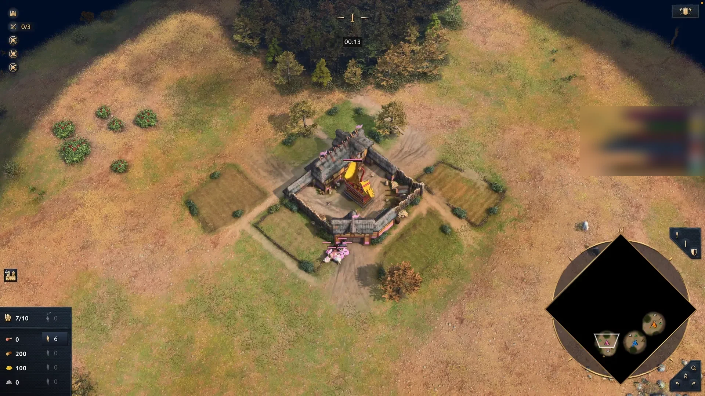

<!doctype html>
<html lang="fr">
  <head>
    <meta charset="utf-8" />
    <link rel="stylesheet" href="audit.css" />
  </head>
  <body>
    <script>
      const I = (name, cls = "") => {
        const ext = /^(english|french|unknown|sengoku_daimyo|mongols|rus)$/.test(name) ? "png" : "webp";
        return ``;
      };
      const SVG = {
        lock: '<svg class="i" viewBox="0 0 24 24"><rect x="4" y="11" width="16" height="10" rx="2"/><path d="M8 11V7a4 4 0 0 1 8 0v4"/></svg>',
        gear: '<svg class="i" viewBox="0 0 24 24"><circle cx="12" cy="12" r="3"/><path d="M19.4 15a1.7 1.7 0 0 0 .3 1.8l.1.1a2 2 0 1 1-2.8 2.8l-.1-.1a1.7 1.7 0 0 0-1.8-.3 1.7 1.7 0 0 0-1 1.5V21a2 2 0 1 1-4 0v-.1a1.7 1.7 0 0 0-1.1-1.5 1.7 1.7 0 0 0-1.8.3l-.1.1a2 2 0 1 1-2.8-2.8l.1-.1a1.7 1.7 0 0 0 .3-1.8 1.7 1.7 0 0 0-1.5-1H3a2 2 0 1 1 0-4h.1a1.7 1.7 0 0 0 1.5-1.1 1.7 1.7 0 0 0-.3-1.8l-.1-.1a2 2 0 1 1 2.8-2.8l.1.1a1.7 1.7 0 0 0 1.8.3H9a1.7 1.7 0 0 0 1-1.5V3a2 2 0 1 1 4 0v.1a1.7 1.7 0 0 0 1 1.5 1.7 1.7 0 0 0 1.8-.3l.1-.1a2 2 0 1 1 2.8 2.8l-.1.1a1.7 1.7 0 0 0-.3 1.8V9a1.7 1.7 0 0 0 1.5 1H21a2 2 0 1 1 0 4h-.1a1.7 1.7 0 0 0-1.5 1z"/></svg>',
        play: '<svg class="i" viewBox="0 0 24 24"><path d="M6 4l14 8-14 8z" fill="currentColor" stroke="none"/></svg>',
        check: '<svg class="i" viewBox="0 0 24 24"><path d="M5 12l5 5L20 7"/></svg>',
        warn: '<svg class="i" viewBox="0 0 24 24"><path d="M12 3l10 18H2z"/><path d="M12 10v4M12 17v.5"/></svg>',
        dots: '<svg class="i" viewBox="0 0 24 24"><circle cx="5" cy="12" r="1.6" fill="currentColor"/><circle cx="12" cy="12" r="1.6" fill="currentColor"/><circle cx="19" cy="12" r="1.6" fill="currentColor"/></svg>',
        home: '<svg class="i" viewBox="0 0 24 24"><path d="M3 11l9-8 9 8v10a1 1 0 0 1-1 1h-5v-7H9v7H4a1 1 0 0 1-1-1z"/></svg>',
        book: '<svg class="i" viewBox="0 0 24 24"><path d="M4 4h12a3 3 0 0 1 3 3v13H7a3 3 0 0 0-3 3z"/><path d="M4 4v16"/></svg>',
        search: '<svg class="i" viewBox="0 0 24 24"><circle cx="11" cy="11" r="7"/><path d="M20 20l-4-4"/></svg>',
        clock: '<svg class="i" viewBox="0 0 24 24"><circle cx="12" cy="12" r="9"/><path d="M12 7v5l3 2"/></svg>',
        info: '<svg class="i" viewBox="0 0 24 24"><circle cx="12" cy="12" r="9"/><path d="M12 11v5M12 8v.5"/></svg>',
        ext: '<svg class="i" viewBox="0 0 24 24"><path d="M14 4h6v6M20 4l-9 9M19 14v5a1 1 0 0 1-1 1H5a1 1 0 0 1-1-1V6a1 1 0 0 1 1-1h5"/></svg>',
        star: '<svg class="i" viewBox="0 0 24 24"><path d="M12 3l2.8 5.8 6.2.9-4.5 4.4 1.1 6.2L12 17.3 6.4 20.3l1.1-6.2L3 9.7l6.2-.9z" fill="currentColor" stroke="none"/></svg>',
      };
      const segs = (done, n = 5) => `<span class="segs">${Array.from({ length: n }, (_, i) => `<i class="${i < done ? "done" : i === done ? "now" : ""}"></i>`).join("")}</span>`;
      const state = (kind) => ({
        ok: `<span class="state"><i class="dot"></i>Lecture OK</span>`,
        off: `<span class="state off"><i class="dot warn"></i>Lecture coupée</span>`,
        bad: `<span class="state bad"><i class="dot bad"></i>Autorisation</span>`,
        wait: `<span class="state" style="color:var(--muted)"><i class="dot" style="background:var(--muted)"></i>En attente</span>`,
      })[kind];
      const head = (step, st, locked = true) =>
        `<div class="ov-head"><span class="grip">⋮⋮</span><span><b>Étape ${step}/5</b></span>${segs(step - 1)}${state(st)}${locked ? `<span style="color:var(--muted)">${SVG.lock}</span>` : ""}</div>`;
      const bar = (icon, have, target, { cost = false, ghost = false } = {}) => {
        if (ghost) return `<div class="bar ghost">${I(icon)}<div class="track"><span class="mark" style="left:calc(100% - 2px)"></span></div><div class="v num">—<small>/${target}</small></div></div>`;
        const scale = Math.max(have, target, 1);
        const color = { resource_food: "var(--food)", resource_wood: "var(--wood)", resource_gold: "var(--gold)", villager: "var(--vils)" }[icon];
        if (cost) {
          const ok = have >= target;
          return `<div class="bar">${I(icon)}<div class="track"><span class="fill" style="width:${Math.min(have / target, 1) * 100}%;background:${ok ? "var(--ok)" : color}"></span></div><div class="v num ${ok ? "ok" : ""}">${have}<small>/${target}</small></div></div>`;
        }
        const over = have > target ? `<span class="over" style="width:${((have - target) / scale) * 100}%"></span>` : "";
        return `<div class="bar">${I(icon)}<div class="track"><span class="fill" style="width:${(Math.min(have, target) / scale) * 100}%;background:${color}"></span>${over}<span class="mark" style="left:calc(${(target / scale) * 100}% - 1px)"></span></div><div class="v num ${have === target ? "ok" : ""}">${have}<small>/${target}</small></div></div>`;
      };

      function overlay(x, { step, st, slot, tile, word, sub, bars, notes, band, split, locked = true }) {
        return `<div class="ov" style="left:${x}px;top:72px">
          ${head(step, st, locked)}
          <div class="ov-main">
            <div class="slot ${slot?.kind ?? ""}">${slot?.html ?? ""}</div>
            <div class="action">${tile}<div><div class="word">${word}</div>${sub ? `<div class="sub">${sub}</div>` : ""}</div></div>
          </div>
          <div class="ov-bars">${bars.join("")}</div>
          ${split ? `<div class="split">${split}</div>` : ""}
          ${band ?? ""}
          ${notes ? `<div class="ov-notes">${notes}</div>` : ""}
        </div>`;
      }

      function pageJeu() {
        const a = overlay(60, {
          step: 1, st: "ok",
          tile: `<span class="tile wood">${I("resource_wood")}</span>`, word: "BOIS", sub: `il construit un ${I("lumber-camp")} camp de bûcherons`,
          bars: [bar("villager", 6, 6), bar("resource_food", 6, 6)],
          notes: `6 ${I("villager")} → ${I("sheep")} moutons<br><span class="done">${I("scout")} éclaireur : motif classique</span>`,
        });
        const b = overlay(400, {
          step: 2, st: "ok",
          slot: { kind: "move", html: `${SVG.warn} déplace 1 ${I("resource_food", "sm")} → ${I("resource_wood", "sm")}` },
          tile: `<span class="tile wood">${I("resource_wood")}</span>`, word: "BOIS", sub: "",
          bars: [bar("villager", 8, 9), bar("resource_food", 7, 6), bar("resource_wood", 1, 3)],
          notes: `3 → ${I("resource_wood")} et construis ${I("lumber-camp")} camp de bûcherons`,
        });
        const c = overlay(740, {
          step: 3, st: "ok",
          tile: `<span class="tile ok">${I("age_2")}</span>`, word: "ÂGE II", sub: `${I("council-hall")} Salle de conseil`,
          bars: [bar("resource_food", 430, 400, { cost: true }), bar("resource_gold", 215, 200, { cost: true })],
          split: `pendant l'étape : 6 ${I("resource_food")} · 3 ${I("resource_wood")} · 3 ${I("resource_gold")}`,
          band: `<div class="band go">${SVG.check} Lance l'âge II maintenant</div>`,
        });
        const c2 = overlay(1080, {
          step: 3, st: "ok",
          tile: `<span class="tile">${I("age_2")}</span>`, word: "ÂGE II", sub: `${I("council-hall")} Salle de conseil`,
          bars: [bar("resource_food", 330, 400, { cost: true }), bar("resource_gold", 215, 200, { cost: true })],
          split: `pendant l'étape : 6 ${I("resource_food")} · 3 ${I("resource_wood")} · 3 ${I("resource_gold")}`,
          band: `<div class="band">Il manque 70 ${I("resource_food")} · ≈ 20 s</div>`,
        });
        const d = overlay(1420, {
          step: 2, st: "off",
          tile: `<span class="tile wood">${I("resource_wood")}</span>`, word: "BOIS", sub: "",
          bars: [bar("villager", 0, 9, { ghost: true }), bar("resource_food", 0, 6, { ghost: true }), bar("resource_wood", 0, 3, { ghost: true })],
          band: `<div class="band off">Suivi auto coupé · <kbd>⌘⌥→</kbd> étape suivante</div>`,
          notes: `3 → ${I("resource_wood")} et construis ${I("lumber-camp")} camp de bûcherons`,
        });
        return `<div class="caption" style="left:60px;top:24px">Vue de partie v3 <small>— 300 pt de large, ≤ 240 pt de haut, zones fixes, pastille d'état</small></div>
          <div class="caption" style="left:400px;top:24px">alerte en pictos, dans son emplacement</div>
          <div class="caption" style="left:740px;top:24px">âge : prêt / pas prêt, même taille</div>
          <div class="caption" style="left:1420px;top:24px">lecture coupée : cible seule, bandeau</div>
          ${a}${b}${c}${c2}${d}`;
      }

      function pagePastille() {
        return `<div class="caption" style="left:60px;top:24px">Pastilles <small>— coach libre après le BO, bilan 6-8 s, attente</small></div>
          <div class="pill quiet" style="left:60px;top:72px"><i class="dot"></i></div>
          <div class="caption" style="left:60px;top:116px;font-weight:400"><small>tout va bien : presque transparente</small></div>
          <div class="pill" style="left:300px;top:72px"><i class="dot"></i>${I("villager")} 2 inactifs</div>
          <div class="pill" style="left:520px;top:72px"><i class="dot"></i>${I("house")} <span style="color:#ffd98a">Population bloquée 20/20</span></div>
          <div class="pill" style="left:820px;top:72px"><i class="dot"></i>${I("town-center")} <span style="color:#ffd98a">TC inactif depuis 28 s</span></div>
          <div class="pill" style="left:1120px;top:72px"><i class="dot" style="background:var(--muted)"></i>En attente de partie · <kbd>⌘⌥B</kbd> masquer</div>
          <div class="card-end" style="left:60px;top:160px"><div class="t">${SVG.check} BO terminé · 2 TC Defensive</div>
            <div class="l">Âge II à <b>4:35</b> (prévu 4:20) · 2e TC à <b>6:40</b> (prévu 6:10)<br>12 s d'inactifs · 1 étape passée à la main<br><span class="muted">Bilan complet dans BoGo › Historique</span></div></div>
          <div class="caption" style="left:380px;top:160px;font-weight:400"><small>carte affichée 6-8 s à la fin du BO, puis repli en pastille « coach » : une seule alerte à la fois (population &gt; inactifs &gt; TC &gt; répartition)</small></div>`;
      }

      const hub = (nav, content) => `<div class="hub">
        <div class="titlebar"><span class="lights"><i></i><i></i><i></i></span>BoGo</div>
        <div class="body"><div class="side">
          <div class="logo"><i>BG</i>BoGo</div>
          ${[["home", "Accueil"], ["book", "Mes BO"], ["search", "Découvrir"], ["clock", "Historique"], ["gear", "Réglages"], ["info", "À propos"]]
            .map(([k, l]) => `<div class="nav ${nav === l ? "on" : ""}">${SVG[k]} ${l}</div>`).join("")}
          <div class="foot">BoGo 0.2.0 (abc1234)<br>Gratuit, non affilié à Microsoft.</div>
        </div><div class="content">${content}</div></div></div>`;

      function pageAccueil() {
        return hub("Accueil", `
          <h1>Prochaine partie</h1><p class="lead">BoGo choisira le BO dès que ta civ sera connue. Prépare-le ici, au calme.</p>
          <div class="status-row">
            <span class="status-chip"><i class="dot"></i>AoE4World : Haaschs, aucune partie en cours</span>
            <span class="status-chip"><i class="dot warn"></i>Lecture de l'écran : autorisation à redonner <span class="btn sm">Ouvrir Réglages</span></span>
          </div>
          <h2>TES CIVS</h2>
          <div class="civ-row">
            <div class="civ-card">${I("english")}<div><div class="n">Anglais</div><div class="b"><b>★</b> 2 TC Defensive</div></div></div>
            <div class="civ-card">${I("french")}<div><div class="n">Français</div><div class="b"><b>★</b> Knight Rush S14</div></div></div>
            <div class="civ-card">${I("mongols")}<div><div class="n">Mongols</div><div class="b">aucun BO ★ · <u>choisir</u></div></div></div>
            <div class="civ-card add">+ Toutes les civilisations (25)</div>
          </div>
          <div class="row" style="margin-top:12px"><span class="btn main">${SVG.play} Je lance une partie</span><span class="muted" style="font-size:12.5px">Civ aléatoire ? BoGo détecte ta civ au début de la partie.</span></div>
          <div class="two"><div>
            <h2>DERNIÈRES PARTIES</h2>
            <table class="table">
              <tr><td>hier 22:10</td><td>${I("english", "sm")} vs ${I("french", "sm")} · Dry Arabia</td><td>2 TC Defensive</td><td class="win">V</td><td class="r"><span class="btn sm">Bilan</span></td></tr>
              <tr><td>hier 21:30</td><td>${I("english", "sm")} vs ${I("mongols", "sm")} · Lipany</td><td>Council Hall Longbow</td><td class="loss">D</td><td class="r"><span class="btn sm">Bilan</span></td></tr>
              <tr><td>lun. 20:05</td><td>${I("french", "sm")} vs ${I("rus", "sm")} · Hill and Dale</td><td>Knight Rush S14</td><td class="win">V</td><td class="r"><span class="btn sm">Bilan</span></td></tr>
            </table></div>
            <div><h2>CE QUE BOGO SURVEILLE EN PARTIE</h2>
              <div class="col" style="font-size:12.5px">${I("house", "sm")} population bloquée · ${I("villager", "sm")} inactifs · ${I("town-center", "sm")} TC inactif · répartition du BO<br><span class="muted">Mode <b>Entraînement</b> (tout) · Mode <b>Classé</b> (étape et point de ralliement seulement)</span></div>
            </div></div>`);
      }

      function pageCiv() {
        const card = (name, style, author, upd, extra = "", main = false) => `<div class="bo-card ${main ? "main" : ""}"><span class="lm">${I("council-hall")}</span>
          <div><div class="t">${name} ${main ? `<span class="tag star">★ principal</span>` : ""}</div>
            <div class="m"><span class="tag">${style}</span><span>par ${author} · aoe4guides.com ${SVG.ext}</span><span>${upd}</span>${extra}</div></div>
          <div class="acts"><span class="icon-btn go">${SVG.play}</span><span class="icon-btn">${SVG.dots}</span></div></div>`;
        return hub("Mes BO", `
          <div class="row" style="justify-content:space-between"><div class="row">${I("english")}<h1 style="margin:0">Anglais</h1><span class="muted">5 BO</span></div>
            <div class="row"><span class="btn main">${SVG.play} Jouer · 2 TC Defensive</span><span class="btn">Découvrir sur aoe4guides ${SVG.ext}</span></div></div>
          <div class="row" style="justify-content:space-between;margin-top:8px">
            <div class="tabs"><span class="tab on">Tous <b>5</b></span><span class="tab">Éco <b>2</b></span><span class="tab">Fast Castle <b>1</b></span><span class="tab">Timing <b>1</b></span><span class="tab">Rush <b>1</b></span></div>
            <div class="seg"><span class="on">Mes BO</span><span>Découvrir</span><span>Récents</span></div></div>
          ${card("2 TC Defensive", "Éco", "FitzBro", "mis à jour il y a 12 j", "", true)}
          ${card("Council Hall Longbow Push", "Timing", "Beastyqt", "il y a 3 j", `<span class="tag upd">mise à jour disponible</span>`)}
          ${card("Abbey of Kings Fast Castle", "Fast Castle", "Valdemar", "il y a 40 j")}
          ${card("Feudal Horseman Raid", "Rush", "DeMusliM", "saison 13")}
          ${card("Wynguard Boom", "Éco", "Haaschs (collé)", "il y a 2 j")}
          <div class="hint">Menu … : Renommer · Changer de style · Mettre à jour · Supprimer (avec « Annuler » 5 s). Un BO ★ par civ est le choix par défaut de l'écran de partie.</div>`);
      }

      function pageAssistant1() {
        return hub("", `
          <div class="steps"><span class="on">1 · Ce que fait BoGo</span><span>2 · Ton profil</span><span>3 · Lecture de l'écran</span><span>4 · Raccourcis et position</span></div>
          <h1>BoGo suit ton build order pendant la partie</h1><p class="lead">Il lit ta fenêtre GeForce Now, avance les étapes tout seul et te prévient quand quelque chose cloche. Voici exactement ce qu'il fait, et ne fait pas.</p>
          <div class="cols" style="margin-top:14px">
            <div class="col does"><h3>${SVG.check} Fait</h3><ul><li>Lit les pixels de <b>ta</b> fenêtre GeForce Now : l'horloge et le panneau des ressources</li><li>Avance ton BO, affiche où envoyer le prochain villageois</li><li>Alerte : répartition, inactifs, population bloquée</li><li>Détecte ta partie et ta civ via AoE4World</li></ul></div>
            <div class="col never"><h3>${SVG.warn} Ne fait jamais</h3><ul><li>Envoyer une touche ou un clic au jeu</li><li>Lire la mémoire du jeu ou y injecter du code</li><li>Afficher une information que le jeu te cache</li><li>Garder les pseudos des autres joueurs</li></ul></div>
            <div class="col"><h3>${SVG.info} Données</h3><ul><li>aoe4world.com : ta partie en cours</li><li>aoe4guides.com : les BO que tu importes</li><li>rts-overlay.github.io : les icônes du jeu</li><li>Rien d'enregistré ni d'envoyé ; clé et bibliothèque restent sur ce Mac</li></ul></div>
          </div>
          <div class="legal">Age of Empires IV © Microsoft Corporation. BoGo was created under Microsoft's "Game Content Usage Rules" using assets from Age of Empires IV, and it is not endorsed by or affiliated with Microsoft. · BoGo n'est affilié ni à Microsoft, ni à NVIDIA, ni à AoE4World, ni à aoe4guides, ni à RTS Overlay. · Outil expérimental, gratuit, sous licence MIT : utilisation sous ta responsabilité ; fermé en tournoi.</div>
          <div class="wiz-foot"><span class="muted" style="font-size:12.5px">Toléré à ce jour, sans approbation officielle de l'éditeur.</span><span class="btn main">Suivant</span></div>`);
      }

      function pageAssistant3() {
        return hub("", `
          <div class="steps"><span>1 · Ce que fait BoGo</span><span>2 · Ton profil</span><span class="on">3 · Lecture de l'écran</span><span>4 · Raccourcis et position</span></div>
          <h1>Autoriser la lecture de l'écran</h1><p class="lead">macOS va te demander l'autorisation « Enregistrement de l'écran ». BoGo ne lit que ces deux zones de la fenêtre GeForce Now, une fois par seconde, et n'enregistre rien.</p>
          <div class="two" style="margin-top:12px">
            <div class="shot"><div class="zone" style="left:46.5%;top:8%;width:7%;height:6%"><span>Horloge</span></div><div class="zone" style="left:0.5%;top:77%;width:10%;height:22%"><span>Ressources et villageois</span></div></div>
            <div>
              <span class="btn main">Autoriser</span> <span class="btn">Ouvrir Réglages Système</span>
              <div class="check-row"><span class="ok">${SVG.check}</span> Autorisation accordée</div>
              <div class="check-row"><span class="ok">${SVG.check}</span> Horloge lue : 0:13</div>
              <div class="check-row"><span class="pend">○</span> Panneau des ressources : lance une partie, ou <u>teste sur une capture</u></div>
              <div class="hint warn" style="margin-top:10px">${SVG.warn} Après une mise à jour de BoGo non signée, macOS peut redemander cette autorisation : retire BoGo de la liste (−) puis rajoute-le (+).</div>
              <div class="hint">macOS 14 ou plus requis pour le suivi automatique. Sinon, BoGo fonctionne en suivi manuel (⌘⌥→).</div>
            </div></div>
          <div class="wiz-foot"><span class="btn">Plus tard (suivi manuel)</span><span class="btn main">Suivant</span></div>`);
      }

      function pageReglages() {
        return hub("Réglages", `
          <h1>Réglages</h1>
          <div class="set" style="margin-top:10px"><div class="set-nav"><span class="on">Compte</span><span>Partie</span><span>Affichage</span><span>Raccourcis</span><span>Bibliothèque</span><span>Diagnostic</span></div>
          <div>
            <div class="field"><span class="k">Profil AoE4World</span><span><span class="input">aoe4world.com/players/5612909</span> <span class="muted" style="font-size:12.5px">→ Haaschs · Conquérant II</span></span></div>
            <div class="field"><span class="k">Clé API (parties perso)</span><span><span class="input">Clé enregistrée ••••a1b2</span> <span class="btn sm">Remplacer</span> <span class="btn sm">Tester</span> <span class="btn sm">Supprimer</span><div class="hint warn">Ne partage jamais de capture de cette page.</div></span></div>
            <h2>PARTIE</h2>
            <div class="field"><span class="k">Lecture de l'écran</span><span><span class="toggle"></span>Active · <span class="muted">horloge lue, panneau lu</span> <span class="btn sm">Tester</span></span></div>
            <div class="field"><span class="k">Mode</span><span><span class="seg"><span class="on">Entraînement</span><span>Classé</span></span><div class="hint">Classé : étape et point de ralliement seulement, sans alertes correctives.</div></span></div>
            <div class="field"><span class="k">Alertes</span><span><span class="toggle"></span>Population bloquée &nbsp; <span class="toggle"></span>Inactifs &nbsp; <span class="toggle"></span>TC inactif &nbsp; <span class="toggle off"></span>Répartition</span></div>
            <div class="field"><span class="k">Lancement automatique</span><span><span class="toggle"></span>Après 8 s, en 1v1 classé ou rapide seulement</span></div>
            <div class="field"><span class="k">Raccourcis</span><span><span class="key">⌘⌥→</span> étape suivante &nbsp; <span class="key">⌘⌥←</span> précédente &nbsp; <span class="key">⌘⌥M</span> réduire &nbsp; <span class="muted">modifiables · actifs en partie seulement</span></span></div>
            <div class="hint" style="margin-top:8px">Les réglages s'appliquent immédiatement. Fermer cette fenêtre ne quitte pas la partie en cours.</div>
          </div></div>`);
      }

      function pageApropos() {
        return hub("À propos", `
          <h1>BoGo 0.2.0 <span class="muted" style="font-size:14px;font-weight:400">(abc1234) · macOS 14-27 Apple Silicon</span></h1>
          <p class="lead">Coach de build order pour Age of Empires IV, en français. Gratuit, et il le restera.</p>
          <div class="cols" style="margin-top:14px">
            <div class="col"><h3>Crédits</h3>AoE4World (détection, données) · aoe4guides.com et les auteurs des BO · RTS Overlay (format, icônes) · aoe4world/overlay (drapeaux) · aoe4world/data (coûts)</div>
            <div class="col"><h3>Licence</h3>Code : MIT © 2026 Haaschs · <u>Licences tierces</u> · <u>Code source</u> ${SVG.ext}</div>
            <div class="col"><h3>Aide</h3><u>Signaler un problème</u> (sans capture de ⚙) · <u>Copier le diagnostic</u> (clé et profil masqués) · <u>Rechercher une mise à jour</u></div>
          </div>
          <div class="legal" style="margin-top:14px">Age of Empires IV © Microsoft Corporation. BoGo was created under Microsoft's "Game Content Usage Rules" (xbox.com/developers/rules) using assets from Age of Empires IV, and it is not endorsed by or affiliated with Microsoft.<br>BoGo a été créé dans le cadre des Game Content Usage Rules de Microsoft avec des éléments d'Age of Empires IV ; il n'est ni approuvé par Microsoft ni affilié à Microsoft. Age of Empires est une marque de Microsoft ; GeForce NOW et NVIDIA sont des marques de NVIDIA. BoGo n'est affilié ni à AoE4World, ni à aoe4guides, ni à RTS Overlay.</div>
          <div class="col" style="margin-top:12px"><h3>Fair-play</h3>BoGo lit uniquement les pixels de ta fenêtre et n'agit jamais sur le jeu. Toléré à ce jour, sans approbation officielle. Fermé en tournoi sauf accord de l'organisateur.</div>`);
      }

      function pageErreurs() {
        const sp = (x, html) => `<div class="pill" style="left:${x}px;top:72px">${html}</div>`;
        return `<div class="caption" style="left:60px;top:24px">États d'erreur et de permission <small>— une forme + un mot, et toujours l'action à faire</small></div>
          ${sp(60, `<i class="dot"></i>Lecture OK`)}
          ${sp(220, `<i class="dot warn"></i><span style="color:#ffd98a">Lecture coupée</span> · <kbd>⌘⌥→</kbd>`)}
          ${sp(470, `<i class="dot bad"></i><span style="color:#ffb3ac">Autorisation requise</span> <span class="btn sm">Ouvrir Réglages</span>`)}
          ${sp(800, `<i class="dot warn"></i>GeForce Now introuvable`)}
          ${sp(1040, `<i class="dot" style="background:var(--muted)"></i>Hors ligne · bibliothèque locale`)}
          ${sp(1330, `<i class="dot" style="background:var(--muted)"></i>macOS 14 requis · suivi manuel`)}
          <div class="banner off" style="left:60px;top:130px">${SVG.warn} Suivi auto coupé<span class="a">Avance avec <kbd>⌘⌥→</kbd>. Les chiffres ne sont plus affichés.</span></div>
          <div class="banner info" style="left:380px;top:130px">${I("french", "sm")} Nouvelle partie : ta civ est Français<span class="a"><span class="btn sm go">Changer de BO</span> <span class="btn sm">Garder celui-ci</span></span></div>
          <div class="banner bad" style="left:700px;top:130px">${SVG.warn} ⌘⌥→ indisponible (déjà utilisé)<span class="a"><span class="btn sm">Changer la touche</span></span></div>
          <div class="dialog" style="left:60px;top:230px"><div class="t">Redonne l'autorisation d'écran</div>Tu viens de mettre BoGo à jour. Comme l'appli n'est pas signée par Apple, macOS a oublié l'autorisation.<br><br>Dans Réglages Système › Confidentialité › Enregistrement de l'écran : retire BoGo (−), puis rajoute-le (+).<br><br><span class="btn main">Ouvrir Réglages Système</span> <span class="btn">Vérifier</span></div>
          <div class="err-table" style="left:460px;top:230px"><b>Messages traduits, avec l'action</b>
            <div class="e"><span class="was">error sending request for url (https://aoe4world.com/…)</span><span>Pas de réseau. BoGo réessaie dans 30 s.</span></div>
            <div class="e"><span class="was">404 Not Found</span><span>Profil introuvable : vérifie le lien aoe4world.com/players/…</span></div>
            <div class="e"><span class="was">403 Forbidden</span><span>AoE4World refuse la clé : remplace-la dans Réglages › Compte.</span></div>
            <div class="e"><span class="was">429 Too Many Requests</span><span>Trop de requêtes : nouvel essai dans 2 min.</span></div>
            <div class="e"><span class="was">Le build order doit être un objet JSON</span><span>BO invalide : il manque les étapes. Réimporte-le depuis aoe4guides.</span></div>
          </div>`;
      }

      function pageWindows() {
        return `<div class="caption" style="left:60px;top:24px">Édition Windows <small>— mêmes écrans, textes et touches adaptés</small></div>
          <div class="ov" style="left:60px;top:72px">
            <div class="ov-head"><span class="grip">⋮⋮</span><span><b>Étape 2/5</b></span>${segs(1)}<span class="state off"><i class="dot warn"></i>Suivi manuel</span>${SVG.lock}</div>
            <div class="ov-main"><div class="slot"></div><div class="action"><span class="tile wood">${I("resource_wood")}</span><div><div class="word">BOIS</div></div></div></div>
            <div class="ov-bars">${bar("villager", 0, 9, { ghost: true })}${bar("resource_food", 0, 6, { ghost: true })}${bar("resource_wood", 0, 3, { ghost: true })}</div>
            <div class="band off">Lecture d'écran : bientôt sur Windows · <kbd>Ctrl+Maj+→</kbd> étape suivante</div>
            <div class="ov-notes">3 → ${I("resource_wood")} et construis ${I("lumber-camp")} camp de bûcherons</div>
          </div>
          <div class="caption" style="left:60px;top:420px;font-weight:400"><small>overlay non activable : jamais de champ de texte dedans, jamais de vol de focus · pictogrammes SVG (pas d'emoji) · Ctrl+Maj plutôt que Ctrl+Alt (= AltGr sur AZERTY)</small></div>
          <div class="tray" style="left:400px;top:72px"><div class="hl">Afficher BoGo</div><div>Verrouiller (clics vers le jeu)</div><div>Mode : Entraînement ▸</div><div class="sep"></div><div>Ouvrir BoGo (bibliothèque, réglages)</div><div>Diagnostic…</div><div class="sep"></div><div>Quitter BoGo</div></div>
          <div class="caption" style="left:400px;top:300px;font-weight:400"><small>icône de zone de notification = point d'entrée (même menu que la barre des menus Mac)</small></div>
          <div class="hub" style="left:660px;top:72px;width:760px;height:470px">
            <div class="titlebar" style="justify-content:flex-end;gap:16px">BoGo <span style="margin-left:auto">—</span><span>☐</span><span>✕</span></div>
            <div class="content" style="grid-column:1/-1">
              <div class="steps"><span>1 · Ce que fait BoGo</span><span class="on">Où joues-tu ?</span><span>Ton profil</span><span>Raccourcis</span></div>
              <h1>Où joues-tu à Age of Empires IV ?</h1><p class="lead">BoGo règle la fenêtre à suivre et les consignes d'affichage.</p>
              <div class="choice" style="margin-top:12px">
                <div class="c on"><b>GeForce NOW</b>appli Windows<small>même fonctionnement que sur Mac</small></div>
                <div class="c"><b>Steam</b>jeu installé<small>passe le jeu en <b>fenêtré sans bordure</b> : en plein écran exclusif, l'overlay ne peut pas s'afficher</small></div>
                <div class="c"><b>Xbox / Game Pass</b>jeu installé<small>fenêtré sans bordure aussi ; détection validée contre l'IA avant tout classé</small></div>
              </div>
              <div class="legal" style="margin-top:14px"><b>Installation :</b> Windows SmartScreen affichera « Windows a protégé votre ordinateur » tant que BoGo n'est pas signé : « Informations complémentaires » → « Exécuter quand même ». Vérifie la somme SHA-256 publiée avec la version. Smart App Control activé bloque les applis non signées : BoGo ne te demandera jamais de le désactiver.</div>
              <div class="wiz-foot"><span class="muted" style="font-size:12.5px">Édition Windows expérimentale : suivi manuel tant que la lecture d'écran n'est pas validée.</span><span class="btn main">Suivant</span></div>
            </div></div>`;
      }

      const v = new URLSearchParams(location.search).get("v") ?? "jeu";
      const pages = { jeu: pageJeu, pastille: pagePastille, accueil: pageAccueil, civ: pageCiv, assistant1: pageAssistant1, assistant3: pageAssistant3, reglages: pageReglages, apropos: pageApropos, erreurs: pageErreurs, windows: pageWindows };
      const desk = ["accueil", "civ", "assistant1", "assistant3", "reglages", "apropos"].includes(v);
      document.body.className = desk ? "desk" : "game";
      document.body.innerHTML = pages[v]();
    </script>
  </body>
</html>
